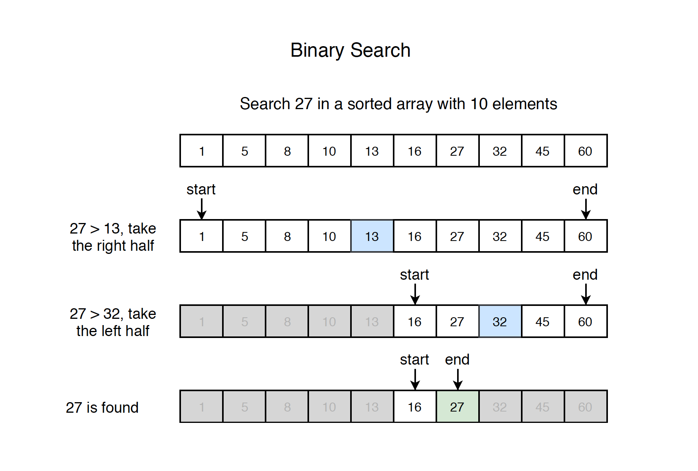

Algorithm - Binary Search
Binary search template.
Search Problem
Given a sorted array with n elements, write a function to search a given element x in array. A simple approach is to do linear search. The time complexity of above algorithm is $O(n)$. Another approach to perform the same task is using Binary Search. The time complexity of binary search algorithm is $O(\log{}n)$.
Binary Search
How it works?
Search a sorted array by repeatedly dividing the search interval in half. Begin with an interval covering the whole array. If the value of the search key is less than the item in the middle of the interval, narrow the interval to the lower half. Otherwise narrow it to the upper half. Repeatedly check until the value is found or the interval is empty.
Steps
- 1) Compare x with the middle element.
- 2) If x matches with middle element, we return the mid index, stop searching, otherwise, go to step 3.
- 3) If x is greater than the mid element, then x can only lie in right half subarray after the mid element. So we recur for right half.
- 4) Otherwise(x is smaller), recur for the left half.
See the example below.

Variants
Given an sorted integer array - nums, and an integer - target. Find the any/first/last position of target in nums, return -1 if target doesn’t exist.
Implementation
Recursive Implementation(find any)
Iterative Implementation(find any)
- Infinite loop may easily occur(eg. start is same with end) if we set start or end improperly.
Binary Search Template(find any)
- Notice the inequality
start + 1 < end. No matter what value ofmidbecomes to, eitherstartorendwill change accordingly. Thus, the inequality will be evaluated with new values to make sure the while loop will be broken when the difference ofstartandendare close to one.
Binary Search Template(find first)
Based on the template, just need to change the logic when we find the target with mid and make sure check start first after the while loop.
Binary Search Template(find last)
Based on the template, just need to change the logic when we find the target with mid and check end first after the while loop.
Classic Problems
- LeetCode 704 - Binary Search
- LintCode 61 - Search for a range
- LeetCode 35 - Search Insert Position
- LeetCode 74 - Search a 2D Matrix
- LeetCode 278 - First Bad Version
- LeetCode 162 - Find Peak Element
- LeetCode 33 - Search in Rotated Sorted Array
- LeetCode 153 - Find Minimum in Rotated Sorted Array
- LeetCode 4 - Median of Two Sorted Arrays
- LeetCode 88 - Merge Sorted Array
- LintCode 39 - Recover Sorted Array
- LeetCode 796 - Rotate String
- LeetCode 151 - Reverse Words in a String